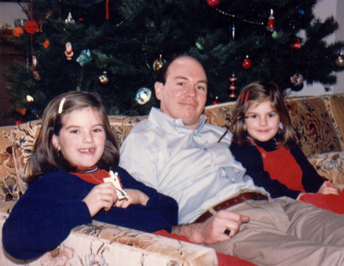

|
his high school graduation. |
Tim Craig was born 20 March 1957 in Rochester, NY. He was the youngest of Bob and Ginny Craig's three children. He studied at Notre Dame, graduating in 1979. He continued on to get his Master's in Social Work? at the University of Maryland in 1980. |
| He lives in Baltimore, MD and has never married. Tim works for the Red Cross. |

|